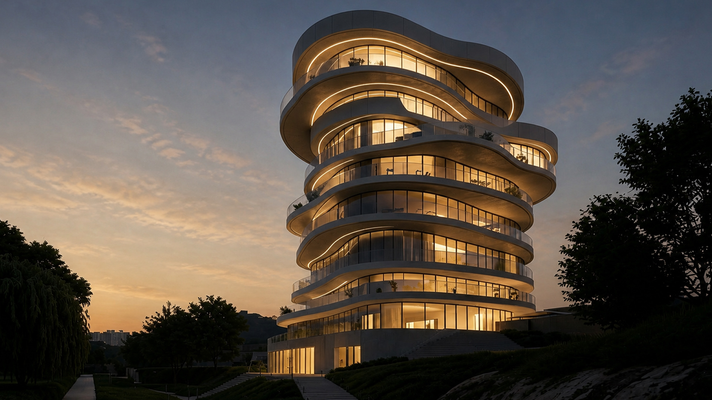
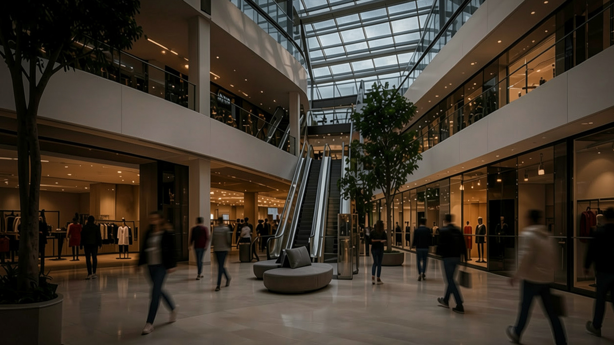

Lumen
Arch
Архитектурное
бюро полного цикла

Берём на себя все этапы: от концепции до реализации — полный контроль на каждом этапе
частных объектов
Листайте
Архитектурное
бюро полного цикла


Архитектура делового пространства, построенная на контрасте: выразительные арки, прозрачность стекла и характер металла объединены в единый городской силуэт
Полный цикл: от первой концепции и рабочей документации до авторского надзора на площадке.
Дубай · Барселона
по договорённости